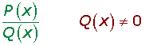
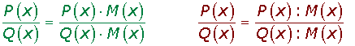

Polinomios y monomios
Expresiones algebraicas
Trabajar en álgebra consiste en manejar relaciones numéricas en las que una o más cantidades son desconocidas. Estas cantidades se llaman variables, incógnitas o indeterminadas y se representan por letras.
Una expresión algebraica es una combinación de letras y números ligada por los signos de las operaciones: adición, sustracción, multiplicación, división y potenciación.
Valor numérico
El valor numérico de una expresión algebraica es el número que se obtiene al sustituir las letras de la misma por números determinados y efectuar las operaciones indicadas en la expresión.
Monomios
Un monomio es una expresión algebraica en la que las únicas operaciones que aparecen entre las variables son el producto y la potencia de exponente natural.
El coeficiente del monomio es el número que aparece multiplicando a las variables.
La parte literal está constituida por las letras y sus exponentes.
El grado de un monomio es la suma de todos los exponentes de las letras o variables.
Dos monomios son semejantes cuando tienen la misma parte literal.
Operaciones con monomios
Suma de Monomios
Sólo podemos sumar monomios semejantes.
La suma de los monomios es otro monomio que tiene la misma parte literal y cuyo coeficiente es la suma de los coeficientes.
Producto de un número por un monomio
El producto de un número por un monomio es otro monomio semejante cuyo coeficiente es el producto del coeficiente de monomio por el número.
Producto de monomios
El producto de monomios es otro monomio que tiene por coeficiente el producto de los coeficientes y cuya parte literal se obtiene multiplicando las potencias que tenga la misma base.
Cociente de monomios
El cociente de monomios es otro monomio que tiene por coeficiente el cociente de los coeficientes y cuya parte literal se obtiene dividiendo las potencias que tenga la misma base.
Polinomios
Un polinomio es una expresión algebraica de la forma:
P(x) = an x n + an - 1 x n - 1 + an - 2 x n - 2 + ... + a1 x 1 + a 0
Siendo an, an - 1 ... a1 , ao números, llamados coeficientes.
n un número natural.
x la variable o indeterminada.
ao es el término independiente.
Grado de un polinomio
El grado de un polinomio P(x) es el mayor exponente al que se encuentra elevada la variable x.
Polinomio completo
Es aquel que tiene todos los términos desde el término independiente hasta el término de mayor grado
Polinomio ordenado
Un polinomio está ordenado si los monomios que lo forman están escritos de mayor a menor grado.
Polinomios iguales
Dos polinomios son iguales si verifican:
Los dos polinomios tienen el mismo grado.
Los coeficientes de los términos del mismo grado son iguales.
Valor numérico de un polinomio
Es el resultado que obtenemos al sustituir la variable x por un número cualquiera.
Operaciones con polinomios
Suma de polinomios
Para sumar dos polinomios se suman los coeficientes de los términos del mismo grado.
La diferencia consiste en sumar el opuesto del sustraendo.
Multiplicación de polinomios
Producto de un número por un polinomio
Es otro polinomio que tiene de grado el mismo del polinomio y como coeficientes el producto de los coeficientes del polinomio por el número.
Producto de un monomio por un polinomio
Se multiplica el monomio por todos y cada uno de los monomios que forman el polinomio.
Producto de polinomios
1 Se multiplica cada monomio del primer polinomio por todos los elementos segundo polinomio.
2 Se suman los monomios del mismo grado.
División de polinomios
P(x) : Q(x)
A la izquierda situamos el dividendo. Si el polinomio no es completo dejamos huecos en los lugares que correspondan.
A la derecha situamos el divisor dentro de una caja.
Dividimos el primer monomio del dividendo entre el primer monomio del divisor.
Multiplicamos cada término del polinomio divisor por el resultado anterior y lo restamos del polinomio dividendo:
Volvemos a dividir el primer monomio del dividendo entre el primer monomio del divisor. Y el resultado lo multiplicamos por el divisor y lo restamos al dividendo.
Repetimos el proceso anterior hasta que el grado del resto sea menor que el grado del divisor, y por tanto no se puede continuar dividiendo.
Para comprobar si la operación es correcta, utilizaríamos la prueba de la división:
D = d · c + r
Regla de Ruffini
Si el divisor es un binomio de la forma x — a, entonces utilizamos un método más breve para hacer la división, llamado regla de Ruffini .
(x4 −3x2 +2 ) : (x −3 )
1Si el polinomio no es completo, lo completamos añadiendo los términos que faltan con ceros.
2Colocamos los coeficientes del dividendo en una línea.
3Abajo a la izquierda colocamos el opuesto del término independiente del divisor.
4Trazamos una raya y bajamos el primer coeficiente.
5Multiplicamos ese coeficiente por el divisor y lo colocamos debajo del siguiente término.
6Sumamos los dos coeficientes.
7Repetimos los pasos 5y 6las veces que fuera necesarias.
8El último número obtenido es el resto.
9El cociente es un polinomio de grado inferior en una unidad al dividendo y cuyos coeficientes son los que hemos obtenido.
Identidades notables
Binomio al cuadrado
(a ± b)2 = a2 ± 2 · a · b + b2
Suma por diferencia
(a + b) · (a − b) = a2 − b2
Binomio al cubo
(a ± b)3 = a3 ± 3 · a2 · b + 3 · a · b2 ± b3
Factorización de un polinomio
Teorema del resto
El resto de la división de un polinomio P(x), entre un polinomio de la forma x - a es el valor numérico de dicho polinomio para el valor: x = a.
Teorema del factor
El polinomio P(x) es divisible por un polinomio de la forma x - a si y sólo si P(x = a) = 0.
Al valor x = a se le llama raíz o cero de P(x).
Observaciones
1Los ceros o raíces son divisores del término independiente del polinomio.
2A cada raíz del tipo x = a le corresponde un binomio del tipo (x −a).
3 Podemos expresar un polinomio en factores al escribirlo como producto de todos los binomios del tipo x — a, que se correspondan a las raíces x = a que se obtengan.
4La suma de los exponentes de los binomios ha de ser igual al grado del polinomio.
5Todo polinomio que no tenga término independiente admite como raíz x = 0, ó lo que es lo mismo, admite como factor x.
6Un polinomio se llama irreducible o primo cuando no puede descomponerse en factores.
Métodos para factorizar un polinomio
Sacar factor común
Consiste en aplicar la propiedad distributiva.
a · b + a · c + a · d = a (b + c + d)
Igualdades notables
Diferencia de cuadrados
Una diferencia de cuadrados es igual a suma por diferencia.
a2 − b2 = (a + b) · (a − b)
Trinomio cuadrado perfecto
Un trinomio cuadrado perfecto es igual a un binomio al cuadrado.
a2 ± 2 a b + b2 = (a ± b)2
Trinomio de segundo grado
a x2 + bx +c = a · (x -x1 ) · (x -x2 )
Polinomio de grado superior a dos.
Utilizamos el teorema del resto y la regla de Ruffini.
1Tomamos los divisores del término independiente: ±1, ±2, ±3.
2Aplicando el teorema del resto sabremos para que valores la división es exacta.
3Dividimos por Ruffini.
4Por ser la división exacta, D = d · c
5Continuamos realizando las mismas operaciones al segundo factor, y los nuevos que obtengamos, hasta que sea de grado uno o no se pueda descomponer en factores reales.
Fracciones algebraicas
Una fracción algebraica es el cociente de dos polinomios y se representa por:

P(x) es el numerador y Q(x) el denominador.
Fracciones algebraicas equivalentes
Dos fracciones algebraicas
son equivalentes, y lo representamos por:
si se verifica que P(x) · S(x) = Q(x) · R(x).
Dada una fracción algebraica, si multiplicamos el numerador y el denominador de dicha fracción por un mismo polinomio distinto de cero, la fracción algebraica resultante es equivalente a la dada.

Simplificación de fracciones algebraicas
Para simplificar una fracción algebraica se divide el numerador y el denominador de la fracción por un polinomio que sea factor común de ambos.
Reducción de fracciones algebraicas a común denominador
Dadas dos fracciones algebraicas, reducirlas a común denominador es encontrar dos fracciones algebraicas equivalentes con el mismo denominador.
1Descomponemos los denominadores en factores para hallarles el mínimo común múltiplo, que será el común denominador.
2Dividimos el común denominador entre los denominadores de las fracciones dadas y el resultado lo multiplicamos por el numerador correspondiente.
Operaciones con fracciones algebraicas
Suma y diferencia de fracciones algebraicas
Fracciones algebraicas con igual denominador
La suma de fracciones algebraicas con el mismo denominador es otra fracción algebraica con el mismo denominador y cuyo numerador es la suma de los numeradores.
Fracciones algebraicas con distinto denominador
En primer lugar se ponen las fracciones algebraica a común denominador, posteriormente se suman los numeradores.
Producto de fracciones algebraicas
El producto de dos fracciones algebraicas es otra fracción algebraica donde el numerador es el producto de los numeradores y el denominador es el producto de los denominadores.
Cociente de fracciones algebraicas
El cociente de dos fracciones algebraicas es otra fracción algebraica con numerador el producto del numerador de la primera por el denominador de la segunda, y con denominador el producto del denominador de la primera por el numerador de la segunda.